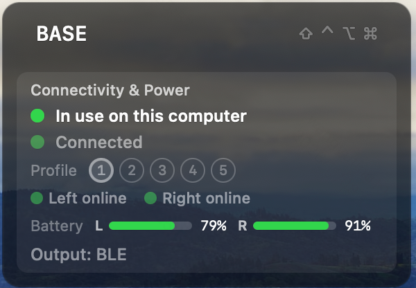
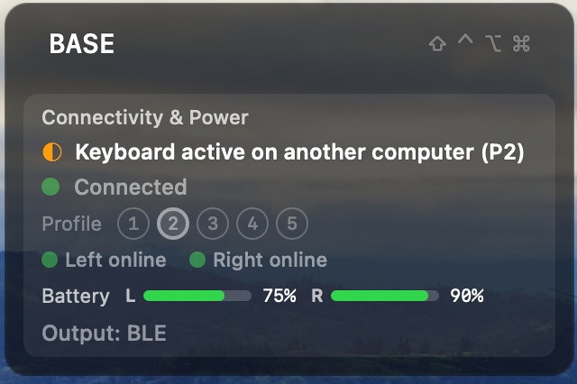
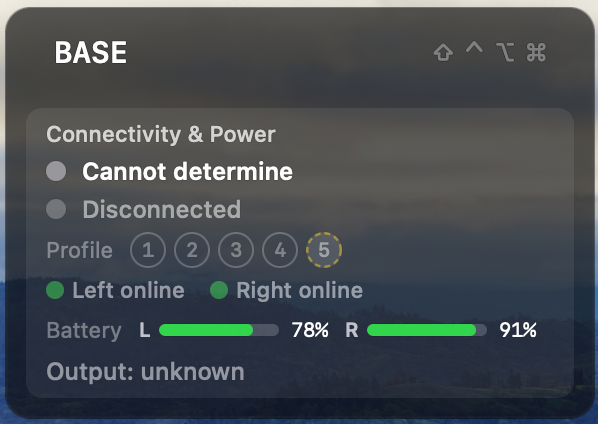
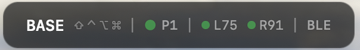
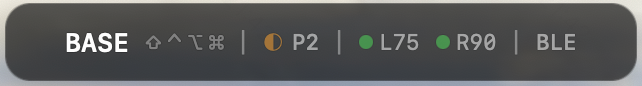
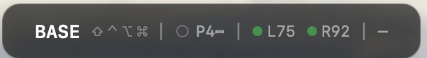

KeyBeacon shows your keyboard's live internal state — battery, connection, output, layer and modifiers — on the screen you're already looking at. No OLED, no wiring, no soldering.

The problem
Press a key and the keyboard updates its layer, its modifiers, its battery, its connection. None of that is visible unless you bolt on hardware — until now.
And which half needs charging — left or right.
With several paired hosts and five BLE slots, it's easy to lose track.
Which endpoint your keystrokes are actually going out on.
Confirm a layer is active without pressing a key to find out.
What it shows
The keyboard reports its state over the BLE link it already has. A small native app displays it — updating as you type.
Left and right percentages on splits. An unavailable reading shows as a sentinel — never a made-up number.
Host-link status, the active BLE profile (1–5), and whether a slot is open for pairing.
New in KBP 1.2: each computer learns whether the keyboard is typing here, active elsewhere, or link down — with zero configuration.
USB or BLE, live — so you know where your keystrokes are landing.
The active layer name and held modifiers, updating as you type.
Follow System / English / 中文 — switches instantly, no restart, and is remembered.
Display modes
A per-link host indicator tells each computer its own relationship to the keyboard.


The same state folded into one menu-bar-width strip.



A displayless keyboard gains a display for free — and a better one than any OLED could fit on the board.
No extra hardware · no screen · no soldering
Setup
Built for ZMK first. A drop-in Zephyr module handles the firmware side — no files copied, no shield wiring edited.
- name: zmk-keybeacon remote: ykiewang revision: v1.2.0
Pin a released tag — never track main. Add the ykiewang remote if it isn't already in your manifest.
CONFIG_ZMK_KEYBEACON=y
One symbol. The optional characteristics (connectivity, battery, host-link) default to on. Then west update && west build and flash the central half.
macOS: BleWidget-<version>.dmg (macOS 12+). Windows: KeyBeacon-win-x64-<version>.zip, self-contained, no .NET install (Windows 10 2004+ / 11).
macOS builds are ad-hoc signed, so right-click → Open the first time (drag the app out of the .dmg and eject it first). Windows builds are unsigned, so SmartScreen warns once — More info → Run anyway.
Grant Bluetooth permission when prompted. Connect a KBP-capable keyboard and its live state appears.
Compatibility
KeyBeacon speaks KBP, a versioned wire standard. Any keyboard that implements it works — on any OS.